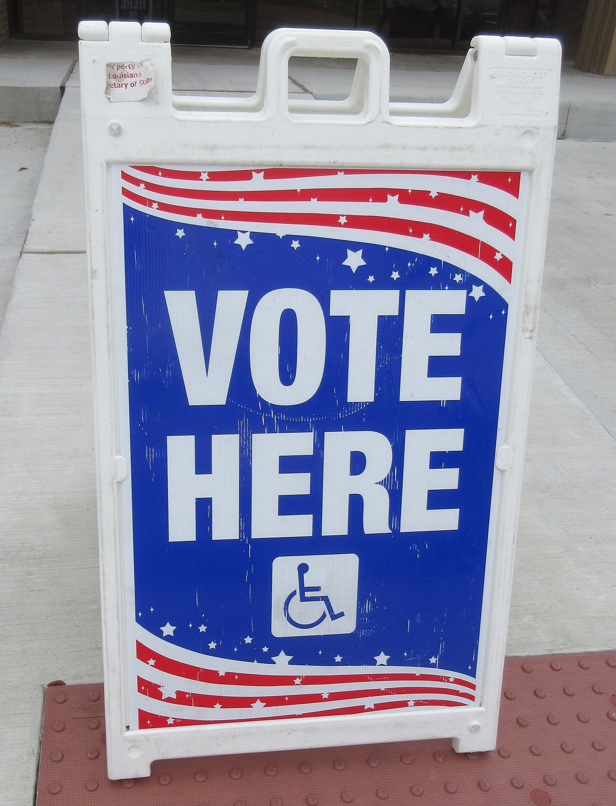

AQShda saylovda qanday ovoz beriladi: yangi fuqarolar uchun roʻyxatdan oʻtish va ovoz berish
AQShda ovoz berish uchun avval saylovchilar roʻyxatidan oʻtish kerak (Shimoliy Dakotadan tashqari). Ovoz berish huquqi faqat AQSh fuqarolariga beriladi: saylov kuniga 18 yoshga toʻlgan va shtatda istiqomat qiladigan fuqaro. Naturalizatsiya marosimidan oʻtgan yangi fuqaro oʻsha kundan roʻyxatdan oʻta oladi. Roʻyxatdan oʻtishning toʻrt yoʻli bor: onlayn, pochta orqali (Milliy pochta saylovchi roʻyxati shakli), shaxsan va haydovchilik guvohnomasini olayotganda (1993-yilgi Milliy saylovchi roʻyxati toʻgʻrisidagi qonun — «motor voter»). Muddatlar shtatma-shtat farq qiladi. Ushbu maʼlumotnoma rasmiy manbalar (vote.gov, USCIS, Saylov yordam komissiyasi) asosida tayyorlangan.

AQShda fuqarolikni olgan oʻzbeklar koʻpincha bitta savol beradi: endi qanday qilib ovoz beraman? Ovoz berish AQSh fuqarosining asosiy huquqlaridan biri, biroq jarayon shtatma-shtat farq qiladi va deyarli hamma joyda avval saylovchilar roʻyxatidan oʻtishni talab qiladi. Quyida bu jarayon faqat rasmiy manbalarga tayangan holda — faktlar asosida tushuntiriladi.
Kim ovoz bera oladi
Federal va shtat saylovlarida ovoz berish uchun uch asosiy shart bajarilishi kerak: ovoz beruvchi AQSh fuqarosi boʻlishi, saylov kuniga 18 yoshga toʻlgan boʻlishi va ovoz beradigan shtatda istiqomat qilishi lozim. Fuqaro boʻlmagan shaxslar — jumladan doimiy yashash ruxsatiga (grin-karta) ega muhojirlar — federal va koʻpchilik shtat hamda mahalliy saylovlarda ovoz bera olmaydi.
Fuqaro boʻlgach — darhol roʻyxatdan oʻtish mumkin
Naturalizatsiya marosimida fuqarolik qasamyodini qabul qilgan kundan boshlab yangi fuqaro saylovchilar roʻyxatidan oʻta oladi. Koʻplab marosimlarda roʻyxatdan oʻtish shakllari joyida tarqatiladi. USCIS (AQSh Fuqarolik va immigratsiya xizmati) maʼlumotiga koʻra, fuqarolikdan oldin roʻyxatdan oʻtish yoki ovoz berish mumkin emas — bu hatto fuqarolik jarayoniga salbiy taʼsir qilishi mumkin.

Roʻyxatdan oʻtishning toʻrt yoʻli
Saylovchilar roʻyxatidan toʻrt yoʻl bilan oʻtish mumkin: (1) shtatning saylov veb-saytida onlayn; (2) pochta orqali — «Milliy pochta saylovchi roʻyxati shakli» (National Mail Voter Registration Form) toʻldirib yuboriladi; (3) shaxsan — shtat saylov idorasi yoki belgilangan davlat muassasalarida; (4) haydovchilik guvohnomasini olayotganda yoki yangilaganda (bu «motor voter» deb ataladi). «Motor voter» qoidasi 1993-yil 20-mayda imzolangan «Milliy saylovchi roʻyxati toʻgʻrisida»gi qonun (NVRA) bilan joriy etilgan.
Milliy pochta shakli hamma shtatda ishlamaydi
Milliy pochta saylovchi roʻyxati shakli AQShning koʻpchilik shtatlarida qoʻllanadi, biroq toʻrtta shtat — Nyu-Xempshir, Shimoliy Dakota, Viskonsin va Vayoming — uni qabul qilmaydi; ularda roʻyxatdan oʻtishning oʻz tartibi bor. Shimoliy Dakotada esa umuman saylovchilar roʻyxati yuritilmaydi — fuqaro shaxsini tasdiqlovchi hujjat bilan toʻgʻridan toʻgʻri ovoz berishi mumkin.
Muddatlar shtatma-shtat farq qiladi
Koʻpchilik shtatlarda roʻyxatdan oʻtishning oxirgi kuni saylovdan taxminan 30 kun oldin tugaydi. Biroq baʼzi shtatlarda saylov kunining oʻzida ham roʻyxatdan oʻtib, oʻsha zahoti ovoz berish mumkin (same-day registration). AQShda umumfederal saylov kuni — noyabr oyining birinchi dushanbasidan keyingi birinchi seshanba. Aniq muddat va shartlarni oʻz shtatingiz saylov idorasi veb-saytida tekshirish lozim.
Ovoz berishning uch yoʻli
Roʻyxatdan oʻtgach, ovoz berishning uch asosiy yoʻli bor: saylovdan oldin — «erta ovoz berish» (early voting) uchastkalarida; saylov kuni — oʻz uchastkangizda; yoki pochta orqali — «absentee»/pochta byulleteni bilan. Qaysi usullar mavjudligi shtatga bogʻliq: baʼzi shtatlar hamma uchun pochta orqali ovoz berishni taklif qiladi, baʼzilari esa buning uchun sabab talab qiladi.
Birinchi marta ovoz berganda shaxsni tasdiqlovchi hujjat
Federal qonunga koʻra, agar siz pochta orqali roʻyxatdan oʻtgan boʻlsangiz va shtatingizda birinchi marta ovoz berayotgan boʻlsangiz, shaxsingizni tasdiqlovchi hujjat koʻrsatishingiz talab qilinishi mumkin: amaldagi suratli ID yoki ismingiz va manzilingiz koʻrsatilgan kommunal hisob, bank koʻchirmasi, davlat cheki yoki davlat hujjati. Koʻplab shtatlar ID talabini kengaytirgan, shu bois oʻz shtatingiz qoidasini oldindan bilib qoʻyish muhim.
Muhim ogohlantirish
Fuqaro boʻlmagan shaxs saylovchilar roʻyxatidan oʻtmasligi yoki ovoz bermasligi shart. Doimiy yashash ruxsatiga ega boʻlsangiz ham, fuqarolikni olmaguningizcha federal saylovda ovoz berish huquqiga ega emassiz; noqonuniy roʻyxatdan oʻtish yoki ovoz berish kelgusidagi fuqarolik yoki immigratsiya ishiga jiddiy zarar yetkazishi mumkin. Shubha boʻlsa — ovoz bermasdan avval maslahatlashing.
Nega bu diaspora uchun muhim
AQShdagi oʻzbek jamoasi oʻsib bormoqda va har yili minglab yurtdoshlar naturalizatsiyadan oʻtib fuqaro boʻlmoqda. Ovoz berish — mahalliy maktab kengashidan tortib Kongress va prezident saylovigacha — jamoaning ovozi eshitilishining qonuniy yoʻli. Roʻyxatdan oʻtish bepul va bir necha daqiqa vaqt oladi; asosiysi — muddatni oʻtkazib yubormaslik.

Manbalar
- vote.gov — Voting as a new U.S. citizen (official U.S. government)
- USCIS — New U.S. Citizens / Citizenship Resource Center
- U.S. Election Assistance Commission — How do I register to vote / National Mail Voter Registration Form
- U.S. Department of Justice — About the National Voter Registration Act (NVRA, 1993)
- National Voter Registration Act of 1993 — Public Law 103-31 (signed 20 May 1993)